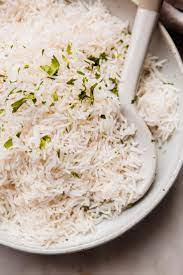

Fancy Rice

Description
Fluffy, not too sticky, rice!
Ingredients
- Long grain white rice, Jasmine or basmati are great
- Salt
- Vinegar, rice or white wine is best but others would be fine
- Oil, butter, coconut, out your preference
- Optional: whole spices like cinnamon, cloves, anise, cardamom, fennel seeds, cumin seeds
Steps
- Use more than twice the volume of rice worth of water.
- Add a dash of salt and sprinkle of vinegar and bring to a boil.
- While water is coming to a boil, rinse the rice really well.
- Add as much rice as you like to the boiling water, as long as there’s enough water to let the rice move freely. If you’re using spices, add them now.
- Cook for about five minutes with the heat as high as possible without boiling over.
- Strain the rice in a colander and discard the excess water.
- Add a on be or two tablespoons of oil to the empty pan over lowest heat. Add the rice back to the pan and cover.
- Steam over low heat for about 20 minutes until desired softness.
- Let sit and cook for a few minutes.